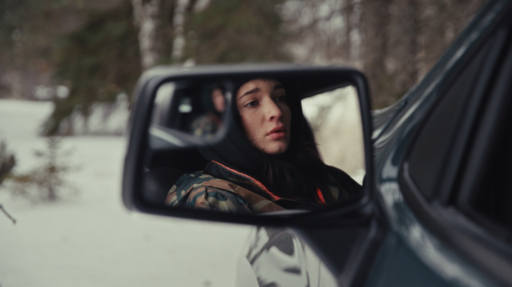

Histoires de Survie2025–2026 · Radio-Canada · Direction photo (6 épisodes) · Montage (1 épisode)
William Prince — Further From The Country2026 · Six Shooter Records · Réalisation · Production · Montage